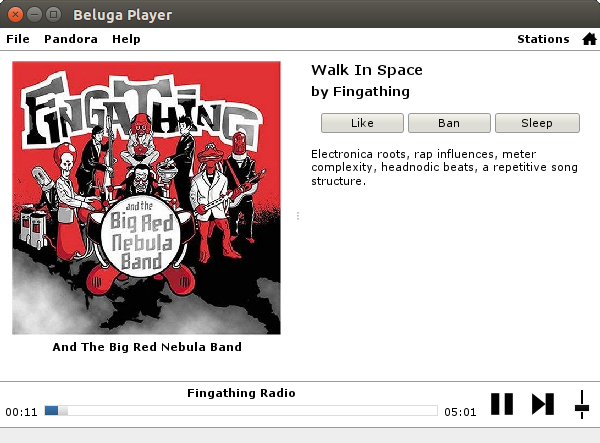
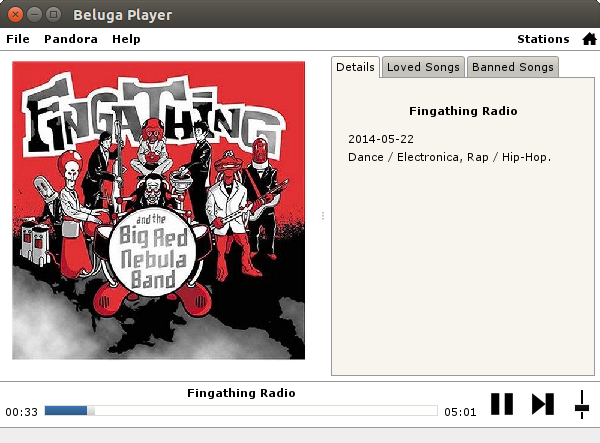

Beluga Player is a free and open source Pandora (pandora.com) player.
Supported features:
- HTTP proxy and DNS proxy
- Play / Pause / Next Song
- Switch stations
- Cover Art
- Thumbs Up / Thumbs Down / Tired of this song
- Create / Delete stations
- Create / Delete / Manage song and artist bookmarks
- Manage QuickMix stations
- Display song traits
- Last.fm scrobbling
Installation
Windows
You just need Java JRE installed to run Beluga Player:
- Download it from the official website: http://java.com/download
- Start Beluga Player by double clicking on the file beluga-player-VERSION.jar
Linux
Debian/Ubuntu
- First, install the Java JRE:
sudo apt-get install default-jre
- Then install the Beluga Player package:
dpkg -i beluga-player-VERSION_all.deb
Other Linux distributions
- Install Java JRE >= 6
- Run the jar file:
java -jar beluga-player-VERSION.jar
Contribution
Source code
Sources are available on GitHub.
Build from sources
Install dependencies
Dependencies: Maven and Java JDK >= 6.
For Debian/Ubuntu:
sudo apt-get install maven default-jdk
Get sources
git clone git@github.com:jbonjean/beluga-player.git
cd beluga-player
git checkout dev
Build
mvn clean package
ls dist/
Support
You can create an issue on GitHub.
Screenshots

